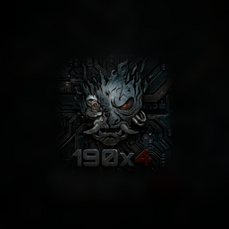
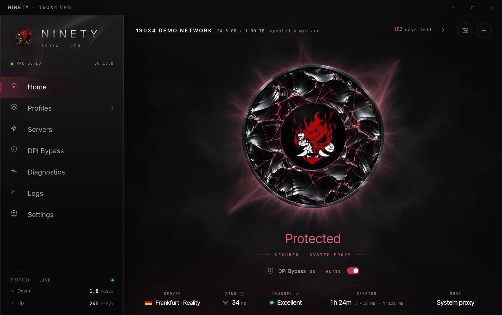

Режимы Windows
Прокси для отдельных программ, системный прокси или полноценный VPN на весь компьютер. Права администратора запрашиваются только там, где без них режим не работает.

Ninety190X4 · SECURE TUNNEL
VPN-клиент для Windows: серверы вы приносите свои, а Ninety подключает, сам выбирает быстрый сервер и показывает, где именно рвётся связь.
Бесплатно, с открытым кодом, без рекламы и телеметрии. Нужна своя подписка или конфиг — серверов Ninety не продаёт.
VPN-клиент для Windows
Подписка или отдельный конфиг превращаются в готовое подключение: Ninety выбирает быстрый сервер, следит за скоростью, сам восстанавливает связь и показывает, где именно рвётся связь, если что-то пошло не так. Внутри работает sing-box, но выбирать движки и править конфиги вручную не нужно.
Возможности
Прокси для отдельных программ, системный прокси или полноценный VPN на весь компьютер. Права администратора запрашиваются только там, где без них режим не работает.
Ссылка на подписку, отдельная конфигурация, готовый конфиг sing-box или Xray, файл WireGuard/AmneziaWG или endpoint TrustTunnel. Ссылку можно просто вставить из буфера.
VLESS, VMess, Trojan, Shadowsocks, Hysteria2, Hysteria, TUIC, AnyTLS, Mieru, SOCKS, NaiveProxy, TrustTunnel, WireGuard/AmneziaWG и WARP — в одном приложении, движок выбирать руками не нужно.
Локальная сеть остаётся вне туннеля, региональные правила уже готовы, а свои работают по сайту, адресу или программе. Отдельное правило может увести трафик в выбранный сервер или в WARP.
Отдельные инструменты для сетей, где сервисы открываются нестабильно. Работают и с выключенным VPN, а адрес активного сервера сам попадает в исключения.
Каждый сервис проверяется дважды — напрямую и через Ninety, — поэтому видно, кто именно мешает: провайдер, сам сервис или сервер. Трасса, проверка утечек и лента сбоев рядом.
Ninety измеряет реальную скорость, а не только пинг. Когда канал начинают душить, он сам меняет сервер или включает маскировку и говорит, что сделал.
Kill switch перекрывает трафик, если туннель упал. В открытой Wi-Fi-сети, которой нет в доверенных, Ninety сам включит VPN и вернёт прежний режим, когда сеть снова безопасна.
Управление из трея, обновления внутри приложения, восстановление сессии после обновления, темы и 15 языков.
Интерфейс

Документация
Документация объясняет режимы, приватность, маршрутизацию и решение проблем — и ни разу не просит выкладывать ссылки на подписки, ключи или полные конфиги.
Ninety обновляется сам: новая версия скачивается внутри приложения, проверяется по подписи, а подписки и настройки остаются на месте. Portable-версия обновляется так же, в один клик.
Честно о границах
Приватность зависит от сервера, провайдера, профиля и окружения Windows. Ninety помогает управлять подключением, но не меняет эту базовую модель доверия.
В публичные обсуждения нельзя вставлять ссылки на подписки, UUID, токены, приватные ключи, данные WARP и полные экспортированные конфиги.
VPN-режим, kill switch и инструменты совместимости меняют сетевые настройки Windows. Включайте их осознанно и проверяйте настройки, прежде чем сообщать об ошибке.